Shape of dataset is : (45211, 23)
<class 'pandas.core.frame.DataFrame'>
RangeIndex: 45211 entries, 0 to 45210
Data columns (total 23 columns):
# Column Non-Null Count Dtype
--- ------ -------------- -----
0 age 45211 non-null int64
1 job 45211 non-null object
2 marital 45211 non-null object
3 education 45211 non-null object
4 default 45211 non-null object
5 balance 45211 non-null int64
6 housing 45211 non-null object
7 loan 45211 non-null object
8 contact 45211 non-null object
9 day 45211 non-null int64
10 month 45211 non-null object
11 duration 45211 non-null int64
12 campaign 45211 non-null int64
13 pdays 45211 non-null int64
14 previous 45211 non-null int64
15 poutcome 45211 non-null object
16 y 45211 non-null int64
17 month_int 45211 non-null int64
18 cons.conf.idx 45211 non-null float64
19 emp.var.rate 45211 non-null float64
20 euribor3m 45211 non-null float64
21 nr.employed 45211 non-null float64
22 cons.price.idx 45211 non-null float64
dtypes: float64(5), int64(9), object(9)
memory usage: 7.9+ MB
Columns in dataset
NoneAN ANALYSIS OF PORTUGUESE BANK MARKETING DATA
The George Washington University (DATS 6103: An Introduction to Data Mining)
INTRODUCTION
Bank marketing is the practice of attracting and acquiring new customers through traditional media and digital media strategies. The use of these media strategies helps determine what kind of customer is attracted to a certain institutions. This also includes different banking institutions purposefully using different strategies to attract the type of customer they want to do business with.
Marketing has evolved from a communication role to a revenue generating role. The consumer has evolved from being a passive recipient of marketing messages to an active participant in the marketing process. Technology has evolved from being a means of communication to a means of data collection and analysis. Data analytics has evolved from being a means of understanding the consumer to a means of understanding the consumer and the institution.
Bank marketing strategy is increasingly focused on digital channels, including social media, video, search and connected TV. As bank and credit union marketers strive to promote brand awareness, they need a new way to assess channel ROI and more accurate data to enable personalized offers. Add to that the growing importance of purpose-driven marketing.
The relentless pace of digitization is disrupting not only the established order in banking, but bank marketing strategies. Marketers at both traditional institutions and digital disruptors are feeling the pressure.
Just as bank marketers begin to master one channel, consumers move to another. Many now toggle between devices on a seemingly infinite number of platforms, making it harder than ever for marketers to pin down the right consumers at the right time in the right place.

The Data Set
The data set used in this analysis is from a Portuguese bank. The data set contains 41,188 observations and 21 variables. The variables include the following:
- age (numeric)
- job : type of job (categorical: ‘admin.’,‘blue-collar’,‘entrepreneur’,‘housemaid’,‘management’,‘retired’,‘self-employed’,‘services’,‘student’,‘technician’,‘unemployed’,‘unknown’)
- marital : marital status (categorical: ‘divorced’,‘married’,‘single’,‘unknown’; note: ‘divorced’ means divorced or widowed)
- education (categorical: ‘basic.4y’,‘basic.6y’,‘basic.9y’,‘high.school’,‘illiterate’,‘professional.course’,‘university.degree’,‘unknown’)
- default: has credit in default? (categorical: ‘no’,‘yes’,‘unknown’)
- housing: has housing loan? (categorical: ‘no’,‘yes’,‘unknown’)
- loan: has personal loan? (categorical: ‘no’,‘yes’,‘unknown’)
- contact: contact communication type (categorical: ‘cellular’,‘telephone’)
- month: last contact month of year (categorical: ‘jan’, ‘feb’, ‘mar’, …, ‘nov’, ‘dec’)
- day_of_week: last contact day of the week (categorical: ‘mon’,‘tue’,‘wed’,‘thu’,‘fri’)
- duration: last contact duration, in seconds (numeric). Important note: this attribute highly affects the output target (e.g., if duration=0 then y=‘no’). Yet, the duration is not known before a call is performed. Also, after the end of the call y is obviously known. Thus, this input should only be included for benchmark purposes and should be discarded if the intention is to have a realistic predictive model.
- campaign: number of contacts performed during this campaign and for this client (numeric, includes last contact)
- pdays: number of days that passed by after the client was last contacted from a previous campaign (numeric; 999 means client was not previously contacted)
- previous: number of contacts performed before this campaign and for this client (numeric)
- poutcome: outcome of the previous marketing campaign (categorical: ‘failure’,‘nonexistent’,‘success’)
- emp.var.rate: employment variation rate - quarterly indicator (numeric)
- cons.price.idx: consumer price index - monthly indicator (numeric)
- cons.conf.idx: consumer confidence index - monthly indicator (numeric)
- euribor3m: euribor 3 month rate - daily indicator (numeric)
- nr.employed: number of employees - quarterly indicator (numeric)
- balance - average yearly balance, in euros (numeric)
- y - has the client subscribed a term deposit? (binary: ‘yes’,‘no’)
The SMART Questions
The SMART questions are as follows:
1.Relationship between subscribing the term deposit and how much the customer is contacted (last contact, Campaign, Pdays, Previous Number of contacts)
- Find out the financially stable population? Will that affect the outcome?
3.Effect of dimensionality reduction on accuracy of the model.
- How are the likelihood of subscriptions affected by social and economic factors?
Throughout the paper we would try to answer the questions
Importing the required libraries
Importing the dataset
Basic Information about the data
Exploratory Data Analysis (EDA)
Distribution of y(target) variable
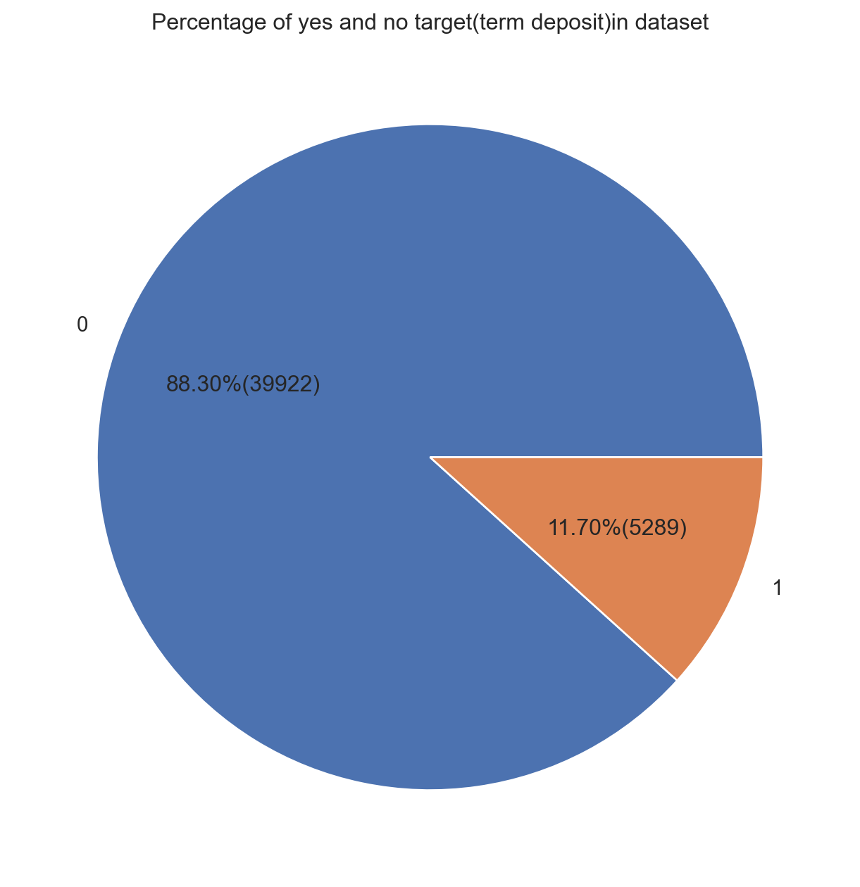
Only 11.7% of enteries are for y=1, so our dataset is unbalanced.
Missing values and Outliers
Education
Here, even though we do not have any missing values but we have ‘unknown’ and ‘other’ as categories, so we will first get rid of them.
Text(0.5, 1.0, 'Type of education Distribution')
Contact
Text(0.5, 1.0, 'Type of Contact Distribution')
- since the type of communication(cellular and telephone) is not really a good indicator of subcription, we drop this variable.
Poutcome

poutcome
failure 4901
other 1840
success 1511
unknown 36959
dtype: int64There are 36959 unknown values and 1840 values with other category. Since, 82% of entries are unknown, 4.07% other, we will directly drop this column.
Outliers

- There are outliers in duration and balance so we need to get rid of them.
- people who have a high balance, are more likely to subscribe to term deposit.
Data Cleaning
- Contact is not useful so we drop it.
- In poutcome, we have a lot of missing values so we drop it.
- Day is not giving any relevant infomation so we drop it.
- Removing the unknowns
- Remove the outliers from balance and duration.
Dropping the irrelavant columns and missing values
for job
unknown : 288
dropping rows with value as unknown in job
for education
unknown : 1730
dropping rows with value as unknown in educationOutlier removal
We have outliers in balance and duration, so to get rid of them we would try to remove the enteries few standard deviation away, since from the histograms most of the enteries are around mean only, we are removing the enteries more than 3SD away.
Balance - Outliers
removing entries before balance -7772.283533
dtype: float64 and after balance 10480.338218
dtype: float64Duration - Outliers
Dropping rows where the duration of calls is less than 5sec since that is irrelevant. And also since converting the call duration in minutes rather than seconds makes more sense we would convert it into minutes.
plotting violen plot for duration and balance after cleaning data
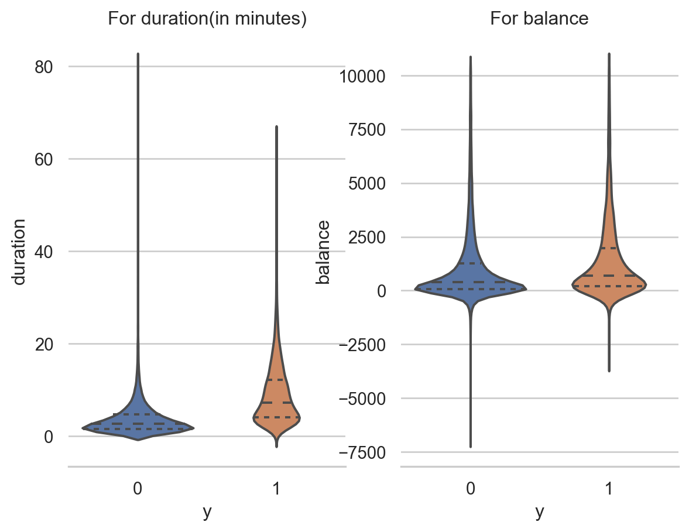
Data Visualization
Let’ visualize import relationships now between variables now.
SMART Question 1 :
Relationship between subscribing the term deposit and how much the customer is contacted (last contact, Campaign, Pdays, Previous Number of contacts)
Answer : Based on last contact info only number of contacts performed during this campaign is contributing a lot towards subscription rates.
Number of calls versus Duration and affect on subscription
Here if we notice, people are more likely to subscribe if the number of calls are less than 5.

Checking between pdays and previous as well
- pdays: number of days that passed by after the client was last contacted from a previous campaign (numeric; 999 means client was not previously contacted)
- previous: number of contacts performed before this campaign and for this client (numeric)
No relation with pdays and previous

Month wise subscription
Text(0.5, 0, 'Month')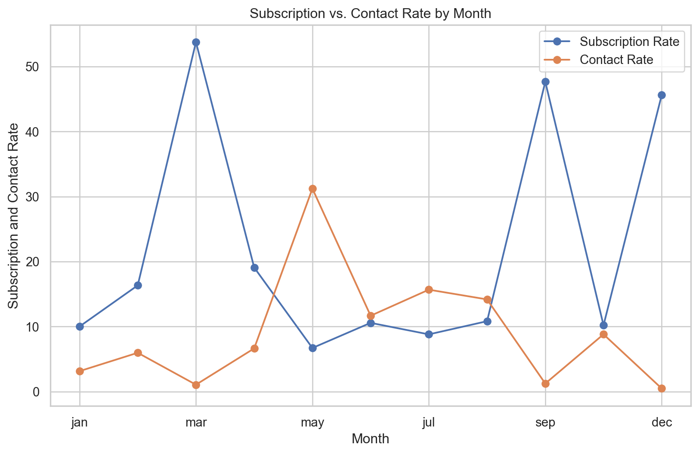
Maximum percentage of people have subscribed in the month of March but bank is contacting people more in the month of May. So it’s better to contact customer’s based on the subcription rate plot.
SMART Question 2
Find out the financially stable population? Will that affect the outcome?
We will try to find the financially stable population based on age, jobs and balance.
Age
Elder people might be more financially stable.
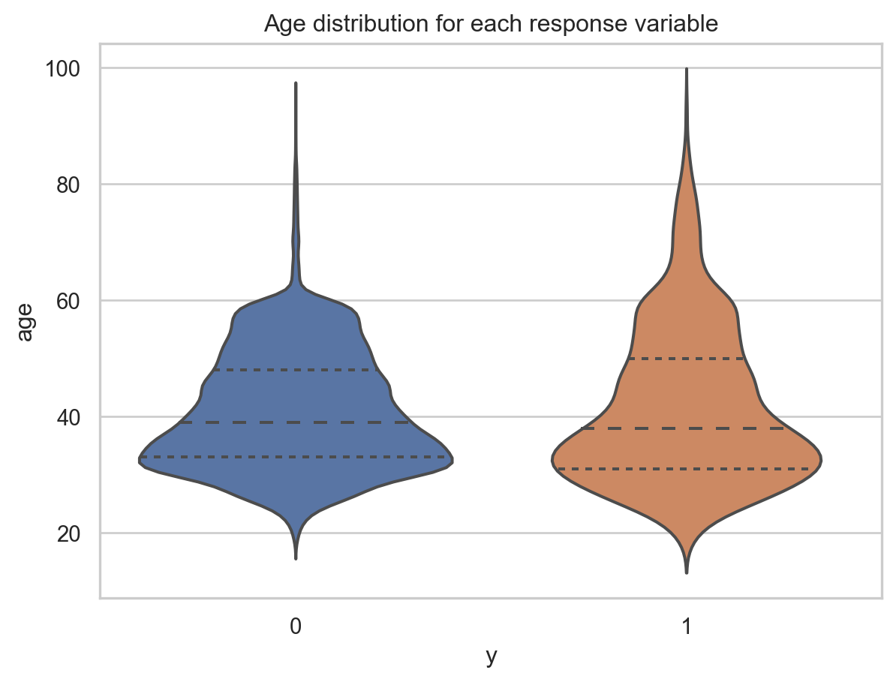
- People who are old are more likely to subscribe to term deposit.
Job
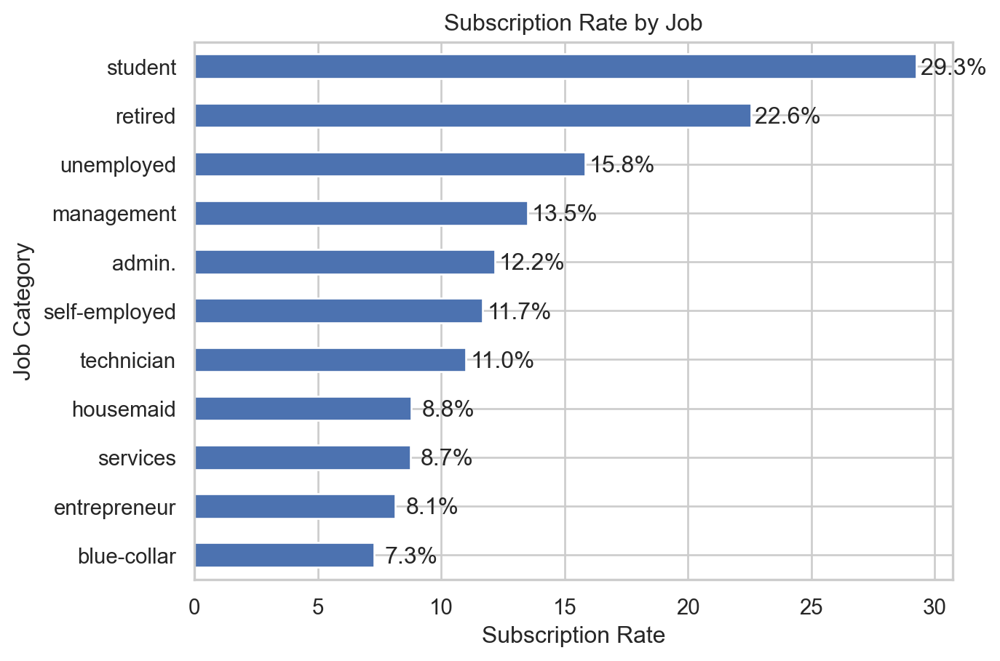
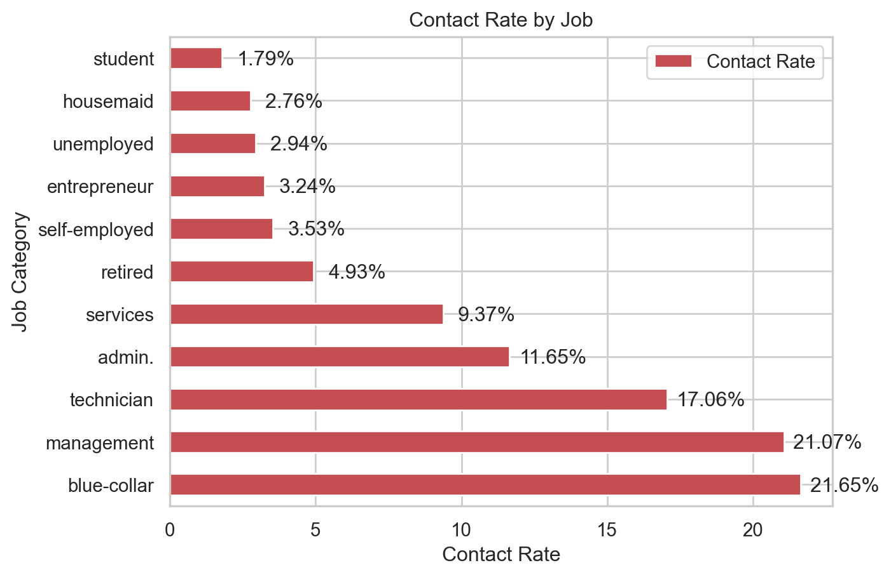
People in blue color and management jobs are contacted more, which should not be the case. Since they have less subscription rates. Unlike popular assumption, students, retired and unemployment seem to have a high subscription rates. Even though they are contacted very less.
Balance
Checking the subscriptions in each balance groups
balGroup % Contacted % Subscription
0 low balance 60.339143 10.503513
1 moderate balance 17.399906 14.036275
2 high balance 13.709374 16.715341
3 Negative 8.551578 5.700909
balanceGroup Contact Rate Subscription Rate
0 Negative 8.551578 5.700909
1 low balance 60.339143 10.503513
2 moderate balance 17.399906 14.036275
3 high balance 13.709374 16.715341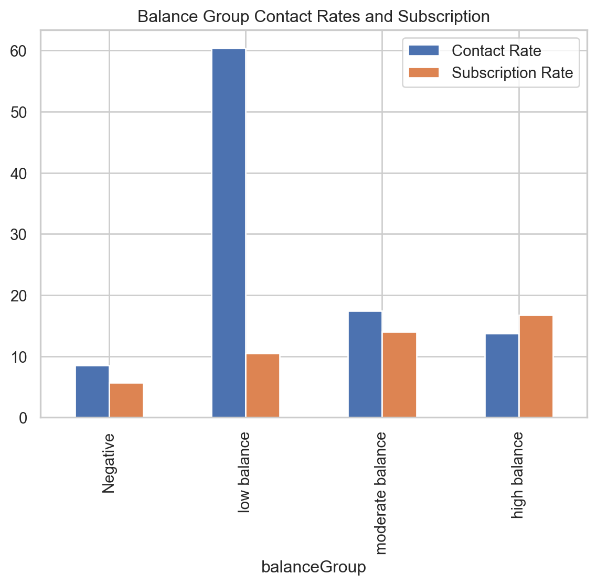
People with moderate to high balance, are contacted less but they have high subscription rates so bank should target them more.
It might be possible that balance group and jobs are telling the same information since some jobs might have high salary and thus balance groups might be depicting jobs only, so we will try to look at them together.
Balance Group versus Job
Text(0.5, 1.0, 'Contact for each balance group in job category')
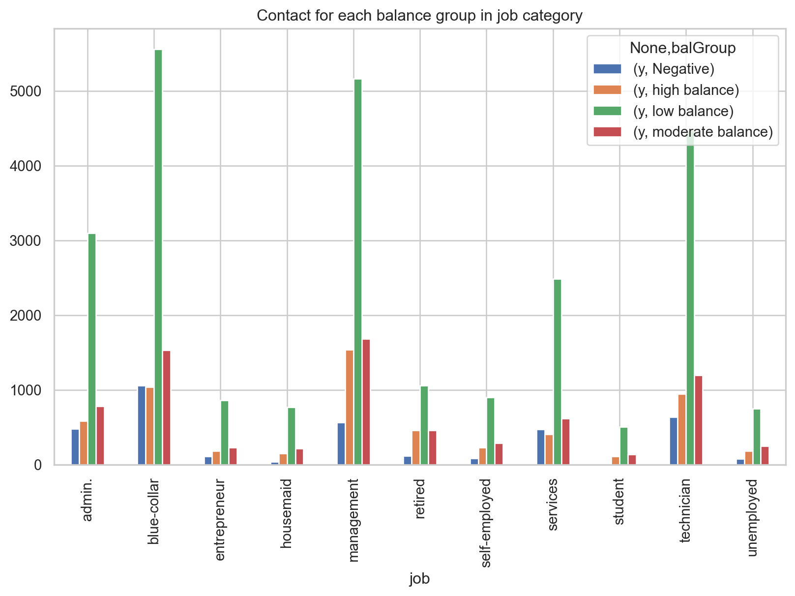
Only the low balance groups are targeted in each category even though moderate to high balance category are more likely to subscribe. Student and Retired are more likely to subscribe and usually have moderate to high balance.
Data Encoding
One Hot Encoding
Sin - Cos encoding
Transforming month into sin and cos so that there cyclic nature (jan-dec are as close as jan-feb) is retained which is usually lost in label encoding.
<AxesSubplot: xlabel='sin_month', ylabel='cos_month'>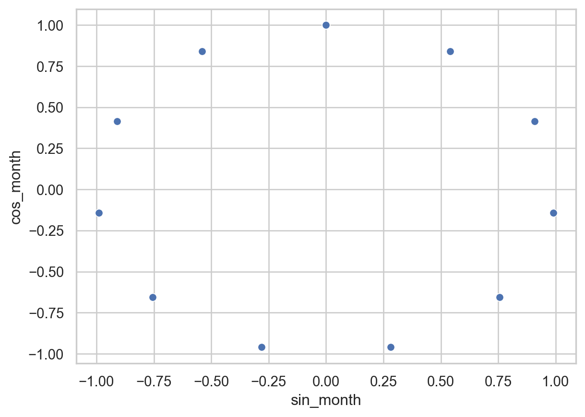
Dropping unnecessary columns irrelevant for modelling
Data Modeling
Splitting our Dataset
Balancing Our Dataset
- Upsampling using SMOTE
- Sin and cos transformation from month_int.
Scaling numeric variables
Scaling age, balance, duration so that our algorithms perform better and all variables are treated equally.
Logistic Regression
Performing Logistic Regression on both balanced and unbalanced dataset. RFE is used in selecting the most important features ## Unbalanced Dataset
Columns selected by RE ['duration', 'housing_no', 'housing_yes', 'loan_no', 'loan_yes', 'job_admin.', 'job_blue-collar', 'job_entrepreneur', 'job_housemaid', 'job_retired', 'job_self-employed', 'job_student', 'education_primary', 'education_tertiary', 'cos_month', 'age', 'balance', 'sin_month']As we can see from RFE, the most relevant features are :
- Duration
- Housing
- Loan
- Job
- Education
- cos_month
Applying model with selected features
Accuracy for training set 0.8905146019783325
Accuracy for testing set 0.8905146019783325
Confusion matrix
[[29481 547]
[ 3172 768]]
precision recall f1-score support
0 0.90 0.98 0.94 30028
1 0.58 0.19 0.29 3940
accuracy 0.89 33968
macro avg 0.74 0.59 0.62 33968
weighted avg 0.87 0.89 0.87 33968
Here, the accuracy is 89% but the precision(0.59) and recall rate value(0.20) is low.
Balanced Dataset
Columns selected by RE ['housing_yes', 'loan_yes', 'job_blue-collar', 'job_entrepreneur', 'job_housemaid', 'job_management', 'job_self-employed', 'job_services', 'job_technician', 'job_unemployed', 'education_primary', 'education_secondary', 'marital_divorced', 'marital_married', 'marital_single']Accuracy for training set 0.847192620221127
Accuracy for testing set 0.8590510366826156
Confusion matrix
[[6785 739]
[1382 6142]]
precision recall f1-score support
0 0.83 0.90 0.86 7524
1 0.89 0.82 0.85 7524
accuracy 0.86 15048
macro avg 0.86 0.86 0.86 15048
weighted avg 0.86 0.86 0.86 15048
Here, important features are * Housing * Loan * Job * Education * Marital Status
Here even though the precision and recall have improved, and accuracy has dropped down, but the important relationships are lost, hence we would move ahead with unbalanced dataset only.
Deciding cut off value for logistic regression
But to have good values for cut-off we would try to find a cutoff where the precision and recall values are decent
Based on plot we would choose 0.25 as cut off
Accuracy for testing set 0.8800341497880358
Confusion matrix
[[28085 1943]
[ 2132 1808]]
precision recall f1-score support
0 0.93 0.94 0.93 30028
1 0.48 0.46 0.47 3940
accuracy 0.88 33968
macro avg 0.71 0.70 0.70 33968
weighted avg 0.88 0.88 0.88 33968
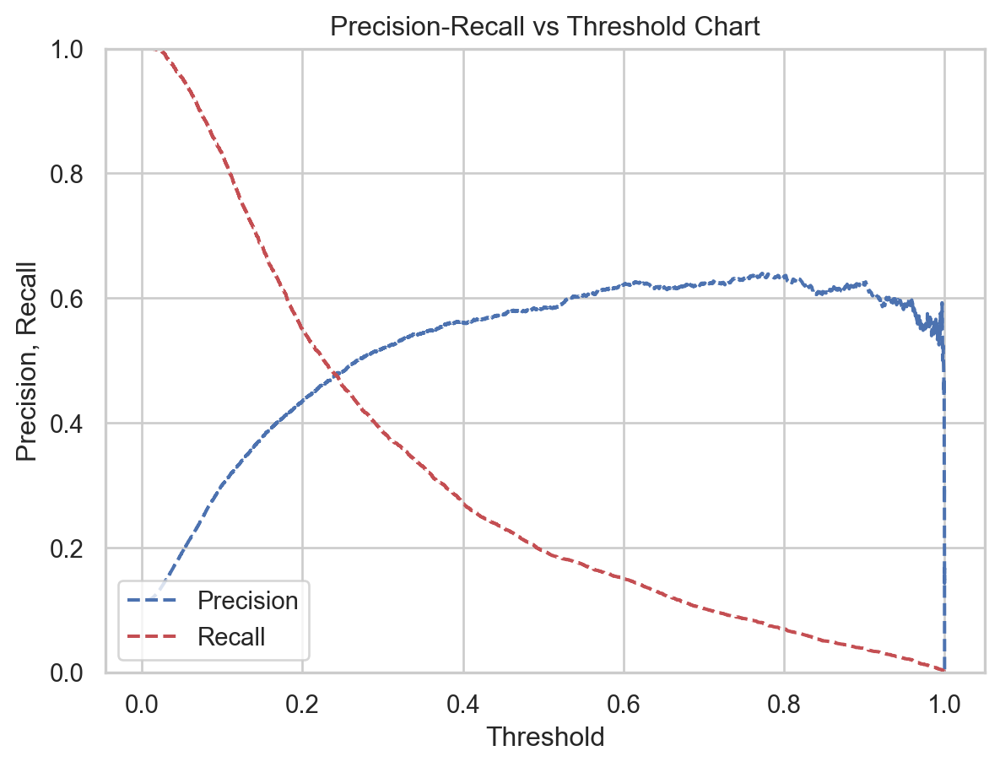
Here as after applying feature selection, finding optimized cut-off, we are able to achieve
Accuracy for testing set 0.8800341497880358 Confusion matrix [[28085 1943] [ 2132 1808]] precision recall f1-score support
0 0.93 0.94 0.93 30028
1 0.48 0.46 0.47 3940
accuracy 0.88 33968If we notice, we have the maximum f1 score achieved here.
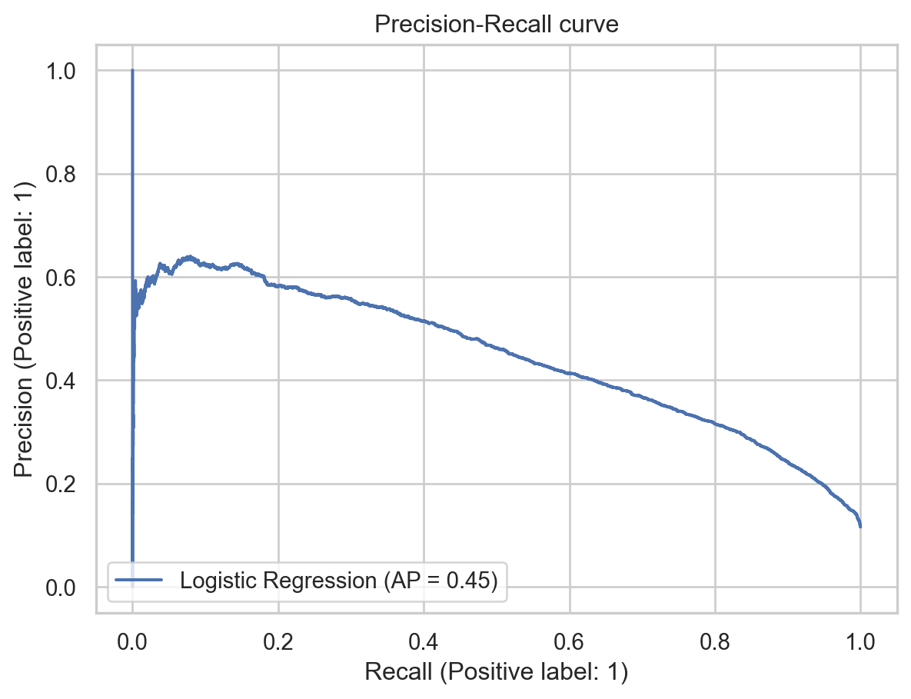
Average weighted precision achieved across all threshold is 0.45.
For ROC - AUC curve refer here. For precision recall curve refer here.
Decision Tree
Feature Selection
Feature 0 variable age score 0.12
Feature 1 variable balance score 0.16
Feature 2 variable duration score 0.33
Feature 3 variable campaign score 0.05
Feature 4 variable previous score 0.04
Feature 5 variable housing_no score 0.03
Feature 6 variable housing_yes score 0.01
Feature 20 variable job_technician score 0.01
Feature 23 variable education_secondary score 0.01
Feature 24 variable education_tertiary score 0.01
Feature 28 variable sin_month score 0.09
Feature 29 variable cos_month score 0.03
Important features from decision treee are :
['age', 'balance', 'duration', 'campaign', 'previous', 'housing_no', 'housing_yes', 'job_technician', 'education_secondary', 'education_tertiary', 'sin_month', 'cos_month']
Features selected from this algorithm are
- Age
- Balance
- Duration
- Campaign
- Previous
- Housing
- Job
- Education
- Marital
- Month - Sin,cos
We have all the important features from EDA here
Hyperparameter tuning
Fitting 5 folds for each of 168 candidates, totalling 840 fitsBest parameters from Grid Search CV :
{'criterion': 'entropy', 'max_depth': 6, 'max_features': 0.6, 'splitter': 'best'}0.9092381064531324
[[29083 945]
[ 2138 1802]]
precision recall f1-score support
0 0.93 0.97 0.95 30028
1 0.66 0.46 0.54 3940
accuracy 0.91 33968
macro avg 0.79 0.71 0.74 33968
weighted avg 0.90 0.91 0.90 33968
Here we are able to achieve better accuracy,precision and recall rate.
AUC Curve : Precision Recall Curve :
Random Forest
Feature Selection
Important features from random forest :
['age', 'balance', 'duration', 'campaign', 'previous', 'housing_no', 'housing_yes', 'job_admin.', 'job_management', 'job_technician', 'education_secondary', 'education_tertiary', 'marital_married', 'marital_single', 'sin_month', 'cos_month']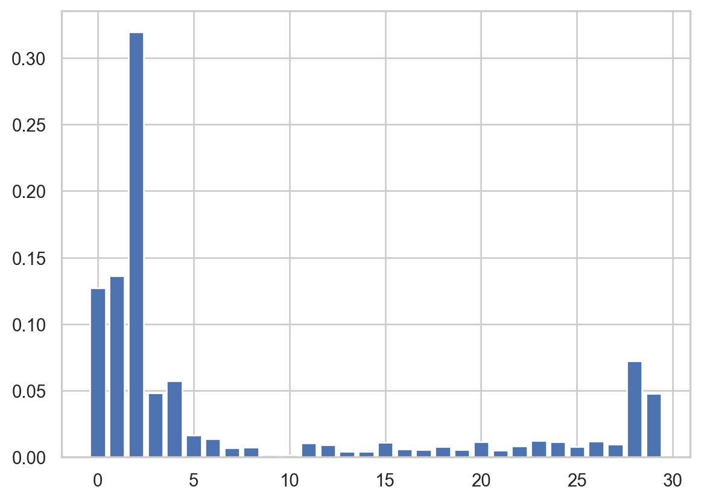
Hyperparameter Tuning
Fitting 3 folds for each of 32 candidates, totalling 96 fits{'bootstrap': True, 'max_depth': 100, 'max_features': 3, 'n_estimators': 200}Training accuracy 1.0
Testing set accuracy 1.0
[[30028 0]
[ 0 3940]]
precision recall f1-score support
0 1.00 1.00 1.00 30028
1 1.00 1.00 1.00 3940
accuracy 1.00 33968
macro avg 1.00 1.00 1.00 33968
weighted avg 1.00 1.00 1.00 33968
We are getting best performance from Random Forest but we are not sure why we are getting such idealistic results so we would also apply cross validation to test our results
Linear SVC
0.8908384361752237
[[29649 379]
[ 3329 611]]
precision recall f1-score support
0 0.90 0.99 0.94 30028
1 0.62 0.16 0.25 3940
accuracy 0.89 33968
macro avg 0.76 0.57 0.59 33968
weighted avg 0.87 0.89 0.86 33968
SVC
0.8952837965143665
[[29832 196]
[ 3361 579]]
precision recall f1-score support
0 0.90 0.99 0.94 30028
1 0.75 0.15 0.25 3940
accuracy 0.90 33968
macro avg 0.82 0.57 0.59 33968
weighted avg 0.88 0.90 0.86 33968
Naive Bayes
Fitting 10 folds for each of 100 candidates, totalling 1000 fitsGaussianNB(var_smoothing=0.04328761281083057)
Model score is 0.8844500706547339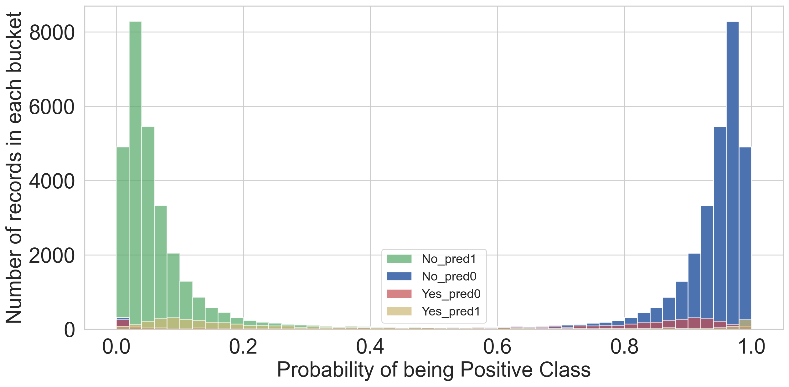
test set evaluation:
0.8844500706547339
[[29051 977]
[ 2948 992]]
precision recall f1-score support
0 0.91 0.97 0.94 30028
1 0.50 0.25 0.34 3940
accuracy 0.88 33968
macro avg 0.71 0.61 0.64 33968
weighted avg 0.86 0.88 0.87 33968
KNN
Maximum accuracy:- 1.0 at K = 0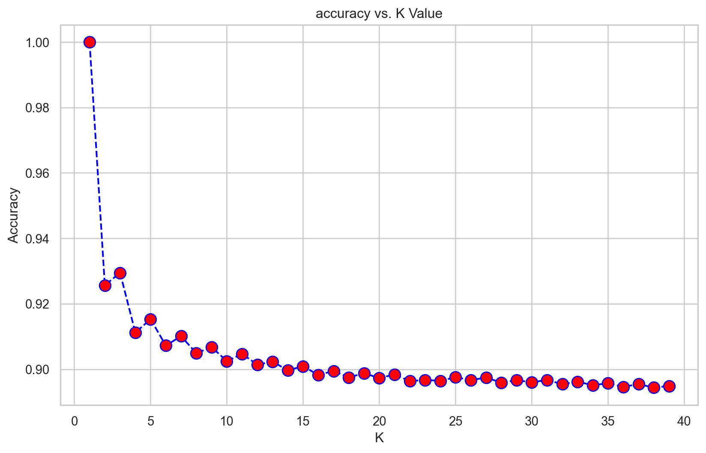
Maximum Precision:- 1.0 at K = 0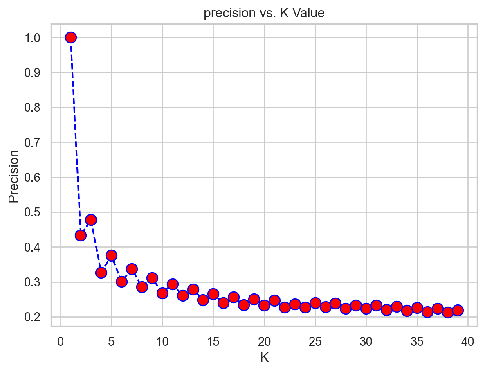
Based on the above plot, optimal k value is 3
Train set accuracy 0.9294630240226095
Test set accuracy 0.9294630240226095
[[29436 592]
[ 1804 2136]]
precision recall f1-score support
0 0.94 0.98 0.96 30028
1 0.78 0.54 0.64 3940
accuracy 0.93 33968
macro avg 0.86 0.76 0.80 33968
weighted avg 0.92 0.93 0.92 33968
ROC -AUC Curve
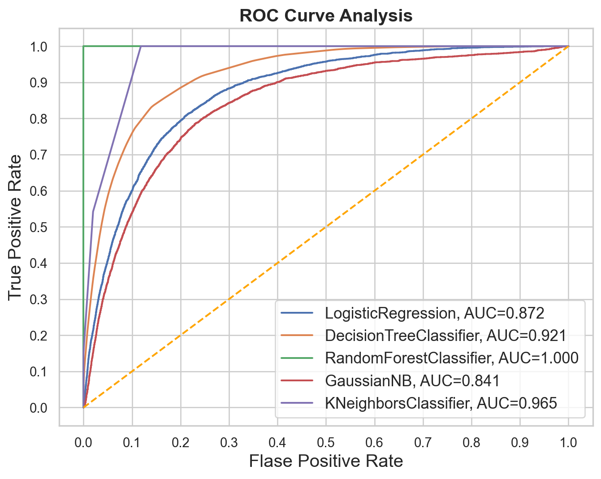
Precision Recall Curve
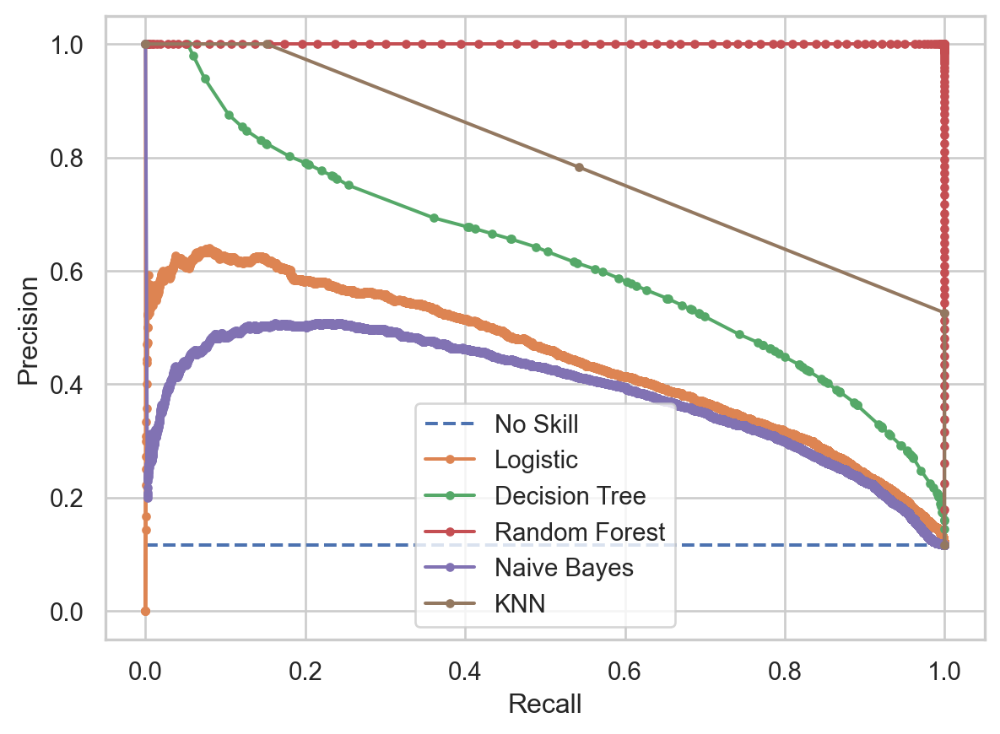
As per the ROC Curve and Precision Recall curve, Random Forest Classifier is performing best. Second best is KNN.
Summary
| Model | Accuracy | Precision | Recall | AUC |
|---|---|---|---|---|
| Logistic | 0.88 | 0.46 | 0.48 | 0.872 |
| Decision Tree | 0.91 | 0.66 | 0.47 | 0.923 |
| Random Forest | 1 | 1 | 1 | 1 |
| SVC | 0.89 | 0.75 | 0.15 | |
| Linear SVC | 0.89 | 0.62 | 0.16 | |
| Gaussian Bayes | 0.88 | 0.50 | 0.25 | 0.841 |
| KNN | 0.92 | 0.78 | 0.54 | 0.965 |
See Table 1.